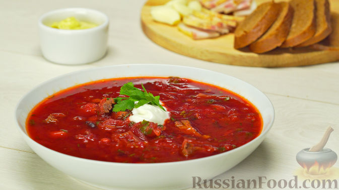

Рецепт борща

Классический борщ (красный борщ) - это знаменитый свекольный суп, которым по праву могут гордиться народы восточной и центральной Европы. Особенно древнюю историю борщ со свеклой имеет в Украине, поэтому часто его называют украинским борщом. Но есть еще и борщ литовский, польский, русский, кубанский, московский и даже сибирский. И варят его по-разному в каждом отдельном регионе да еще и с вариантами: мясной, постный, а летом и холодный борщ, который часто называют холодником, свекольником... Объединяет главное – везде, где готовят борщ, он относится к самым любимым кулинарным блюдам. А умение вкусно готовить настоящий борщ в этих краях считается одним из основных добродетелей женщины, почти не уступая красоте и доброте. Поэтому приготовление борща – это некое таинство, а сам борщ для славян – один из главных афродизиаков. Вкусное это слово – борщ!
Ингредиенты
- Мясо на кости - 800 г
- Фасоль - 50 г
- Свекла - 400 г
- Капуста белокочанная - 250 г
- Картофель мелкий - 6 шт.
- Морковь - 2 шт.
- Лук репчатый - 2 шт.
- Томатная паста - 140 г
- Лавровый лист - 3 шт.
- Сахар - 1 ст. ложка
- Уксус 9% - 1 ст. ложка
- Перец черный горошком - 10 шт.
- Соль - 3 ч. ложки
- Лук зеленый - 5 г
- Чеснок - 3 зубчика
- Укроп свежий - 15 г
- Петрушка свежая - 15 г
- Масло растительное - 3 ст. ложки
- Вода - 2,5 л
- Сметана (для подачи) - по вкусу
Процесс приготовления
- В кастрюлю положить хорошо промытое мясо и залить водой.
- Как только бульон начнет закипать, необходимо снять пену. Добавить в бульон фасоль и варить на слабом огне 1,5 часа.
- Капусту нашинковать тонкими полосками.
- Картофель нарезать кубиками.
- Свёклу натереть на крупной терке.
- Морковь натереть на крупной терке.
- Лук мелко нарезать.
- Разогреть сковороду, добавить 2 ст. ложки растительного масла и обжарить лук в течение 1 минуты.
Затем добавить морковь и жарить еще 2 минуты.
- Добавить в сковороду свеклу, 1 ч. ложку соли, 1 ст. ложку растительного масла и жарить, постоянно перемешивая, 2 минуты.
Добавить 1 ст. ложку сахара, томат-пасту, 1 ст. ложку уксуса и 100 мл бульона. Убавить огонь до слабого и тушить свеклу при закрытой крышке 15 минут.
- Из бульона достать мясо, отделить его от костей и нарезать небольшими кубиками.
- В бульон положить картошку и варить 10 минут.
Затем добавить 1 ч. ложку соли, перец горошком, лавровый лист.
Добавить капусту и варить 10 минут.
- Добавить пассерованные овощи, хорошо перемешать. Варить борщ со свеклой на слабом огне 3 минуты.
- Добавить в борщ нарезанный зеленый лук, давленый чеснок, измельченную зелень петрушки и укропа.
Выключить плиту, накрыть кастрюлю крышкой и оставить борщ на 15 минут.
Борщ готов! Подавать со сметаной. Приятного аппетита!

Если вы хотите узнать больше об истории и разновидностях борща, перейдите на страницу
в википедии